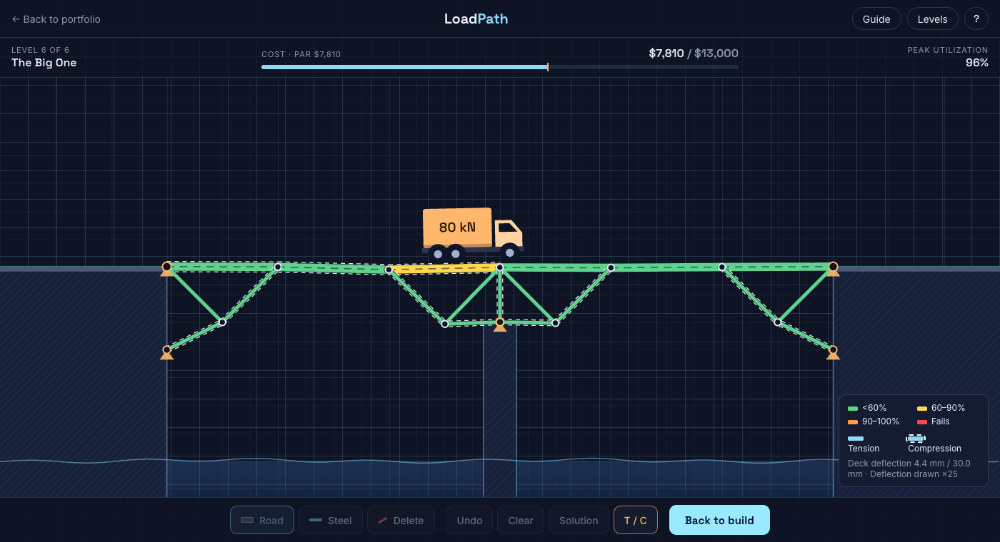

LoadPath
A bridge-building game running real structural analysis in the browser.
This is where my two worlds meet. You build a truss bridge on a budget, then drive a truck across it. Every design is checked the way an engineer would check it: a direct-stiffness truss solver I wrote runs the truck across the whole span, and if a member is overloaded the bridge comes down.
- Direct stiffness method from scratch: global stiffness matrix, LU factorization, member forces at every truck position
- Member checks with φ = 0.9: yield in tension, AISC 360 column curve for buckling, AISC H1-1 combined axial and bending on the deck
- Deflection limit of span/400 on the later levels, so stiffness matters, not just strength
- Members colour-coded by utilization, with tension and compression shown, and a collapse simulation when something fails
- 6 levels, from an 8 m gap with a 30 kN van to a 24 m span with a pier and an 80 kN truck
- Stars for matching par, the cheapest passing design found, so lean, realistic designs score best
- Built-in truss guide (Pratt, Howe, Warren, K, deck, bowstring) with force diagrams solved live
JavaScriptHTML CanvasStructural analysis